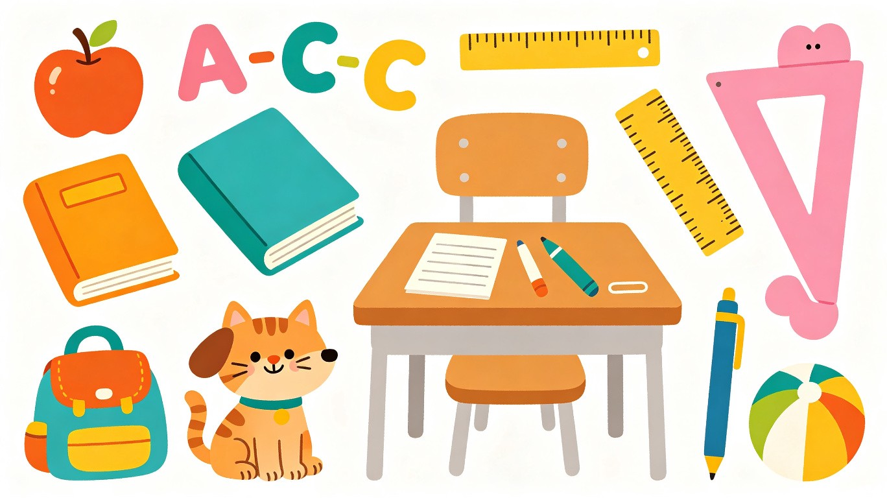

 剑桥少儿英语学习平台 Starters & Movers 单词语法 · 数学练习 · 任务管理 · 进度追踪 Starters 阶段 Movers 阶段 数学练习 仪表盘 任务 📖 学习目录 📖 🔊 点击单词卡片上的 小喇叭 可以听英式发音！点击卡片本身可以标记为"已掌握"，进度通过 SQLite 数据库保存。 学习进度总览 重置全部进度 数学运算练习 加法 减法 乘法 除法 L1 个位 L2 两位数 L3 进退位 题数： 10 20 50 开始练习 00:00 第 1 / 20 题 3 + 5 = ? 提交 跳过 练习完成！ 再来一组 返回首页 任务管理 新建任务 英语 数学 词汇 语法 运算 L1 L2 L3 添加任务 今日任务 加载中... 今日学习仪表盘 今日任务 加载中... 学习进度 学习活跃度 开始学习